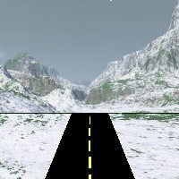

Virtual Road Trip
The original site contained a Virtual Road Trip with destinations including Alaska. The surviving idp/snow.shtml includes buttons to drive, pull over and restart.
Alaska · recovered graphic preview

Pulled over.
The original driving/timer dependencies are missing. These controls toggle the original surviving images; they do not report fabricated distance or claim full historical simulation fidelity.